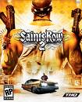
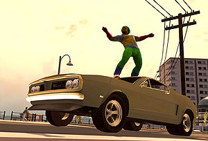
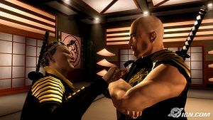

Saints Row 2
 De: La Frikipedia, la enciclopedia extremadamente seria.
De: La Frikipedia, la enciclopedia extremadamente seria.

|
La información contenida en este artículo es una mínima parte de su jugo total, así que ponte los guantes, saca el tupperwere y empieza a exprimir el tema. Si lo haces serás recompensado con una galleta en almíbar y algo más.
|
De la serie Videojuegos:
Saints Row 2

a que te gustaría hacerlo en la vida real
| Desarrollado por:
|
Pues el mismo que el del uno
|
| Distribuido por:
|
THQ
|
| Diseñado por:
|
Un tio con tendencias sádicas
|
| Motor
|
controles
|
| Género(s)
|
Aventura
|
| Fecha de lanzamiento:
|
14/10/2008
|
| Modos de juego:
|
Tercera persona
|
| Requisitos:
|
volar cosas en mil pedazos
|
| Disponible en:
|
Xbox 360, PlayStation 3
|
| Formatos:
|
NH
|
| Edades:
|
si puedes manejar un control, puedes jugar.
|
| Puntuaciones:
|
666
|
la exposición prolongada al juego provoca violencia extrema
Saints Row 2 es una copia barata de GTA IV un respetable juego de sexbox 360 y pollastation 3 xbox 360 y play station 3.
 Esta portada sale hasta en la version de coleccionista
Aventuras
Lo primero que tienes que hacer es encabronarte o haciendo a tu personaje para jugar, empiezas donde sales de una cárcel y tienes que librarte de alguno pelmazos guardias para conseguir puntos.
Te aventuras para robar carros y ganar todo el nivel para conseguirte ropa.
Personajes
Hay muchos y variados personajes en este buenisimo juego (Aja)
- Personaje principal: No tiene personalidad porque lo haces tu
- El moradigillo: Es tu amigo que lo rescatas de la corte antes de ser sepultado por la silla eléctrica.
Que gran variedad de personajes.
Nota: faltan mas, soy muy vago para colocarlos.
Cosas que se pueden hacer
 Te podras poner bien drogata en este juego
- Matar a todos fácilmente
- Asaltar ahorcándolos
- Aburrirte
- Entrar y matar vendedores
- Atropellar y hacer trucos con tu celular como Grand THEFT TUTO IV
- Seguirte aburriendo
- Y aburrite online
Fallas
 Un protagonista de saint row 2 haciendo los pasos de Chuck Norris
- Que es una copia baratisima de GTA IV (pero mejor)
- No tienes padrinos mágicos
- Al estrellar un avión, hay huelga de hippies con hippies(si quieres, mátelos)
- Graficas
- Que te aburres
- El juego online
- La mayoría de las cosas
Autor(es):
- Veni Vidi Vici
- Mel-o
- DJ Nietzsche
- Phoenix556
- Bladguer
- Xkrockiller
- Lucasblank
- El que arriesga
- Genericool
- Frikisexigirl!!!
Frikipedia 2005-2016, Licencia
GFDL 1.2 - Extraído por FrikiLeaks